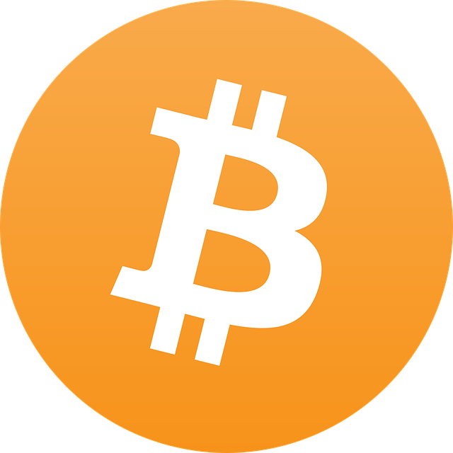
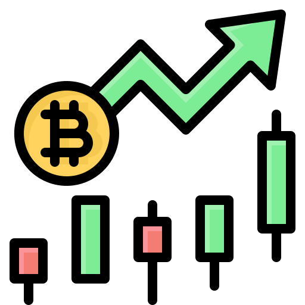

Criptomoeda é o futuro
As criptomoedas estão moldando o futuro da economia digital. Muito mais do que simples moedas virtuais, elas representam uma verdadeira revolução na forma como trocamos, investimos e armazenamos valor.

no CoinBoard, você encontra tudo sobre moedas digitais, das mais conhecidas como o Bitcoin até os novos projetos promissores que estão surgindo todos os dias. Nosso objetivo é informar, alertar e preparar você para esse novo cenário financeiro que cresce em ritmo acelerado.
Foco em Inovação tecnológica das criptomoedas
As criptomoedas são baseadas na tecnologia blockchain, que garante transparência e segurança. Essa inovação está revolucionando setores além das finanças, como contratos digitais, arte digital (NFTs) e sistemas de votação eletrônica.
NFTs: Muito além de imagens
Os NFTs (tokens não fungíveis) são uma das maiores provas de como a tecnologia blockchain vai muito além das finanças.
Eles transformam arte digital, músicas, vídeos, e até memes em itens únicos e comercializáveis. Cada NFT tem um código exclusivo que garante sua autenticidade e propriedade digital.

Benefícios das Criptomoedas: Liberdade e Inovação
As criptomoedas oferecem um novo nível de liberdade financeira, permitindo transações sem fronteiras, taxas reduzidas e controle total dos próprios ativos. A descentralização garante mais privacidade e segurança contra censuras ou bloqueios arbitrários. Além disso, promovem a inclusão financeira ao permitir que qualquer pessoa com acesso à internet participe da economia global — mesmo sem conta bancária tradicional.
Desvantagens e Riscos: Nem tudo é ouro digital
Apesar das vantagens, o universo cripto ainda carrega riscos importantes. A volatilidade extrema pode gerar grandes perdas em questão de minutos. A falta de regulamentação também facilita golpes, fraudes e o uso para atividades ilícitas. Além disso, a perda de chaves privadas significa perder os fundos para sempre — não há suporte técnico que recupere uma carteira cripto. Ou seja, o poder vem com grande responsabilidade.

Velocidade Sem Fronteiras

As criptomoedas revolucionaram o conceito de transações financeiras ao permitirem transferências quase instantâneas entre qualquer lugar do mundo.
Diferente dos sistemas bancários tradicionais, que dependem de horários comerciais e intermediários, as transações com criptoativos funcionam 24 horas por dia, sete dias por semana — tudo com taxas reduzidas e sem barreiras geográficas. Essa agilidade facilita o comércio internacional, pagamentos remotos e doações globais, abrindo espaço para uma economia mais conectada e dinâmica.
Segurança e Autonomia Digital

Em um mundo cada vez mais conectado, a segurança digital tornou-se essencial. As criptomoedas e tecnologias descentralizadas não apenas protegem transações, mas também garantem a autonomia individual sobre dados e ativos.
Elas eliminam intermediários e reduzem riscos de vazamentos, fraudes ou censura, permitindo que o usuário tenha controle total sobre suas informações. Essa liberdade digital fortalece o direito à privacidade e transforma cada indivíduo em seu próprio guardião financeiro e informacional.
Além do Dinheiro: A Revolução Que Já Começou
As criptomoedas deixaram de ser apenas uma curiosidade digital para se tornarem símbolos de uma mudança estrutural em como enxergamos valor, confiança e liberdade. Em vez de depender de instituições centenárias, pessoas ao redor do mundo agora podem acessar sistemas financeiros descentralizados, abertos e globais — mesmo em regiões onde os bancos nunca chegaram.
Essa transformação não é apenas técnica; ela é cultural, econômica e, acima de tudo, social. Ao romper fronteiras, descentralizar o poder e devolver o controle ao indivíduo, a tecnologia blockchain está moldando uma nova forma de viver e se relacionar com o dinheiro, com a informação e com o próprio papel na sociedade digital.
Mas como toda revolução silenciosa, essa exige atenção. Entender o que está acontecendo hoje é mais do que uma escolha: é uma necessidade. Porque, no fim das contas, o futuro não espera — ele já começou. E quem escolhe ignorá-lo, corre o risco de acordar num mundo que já não entende mais.